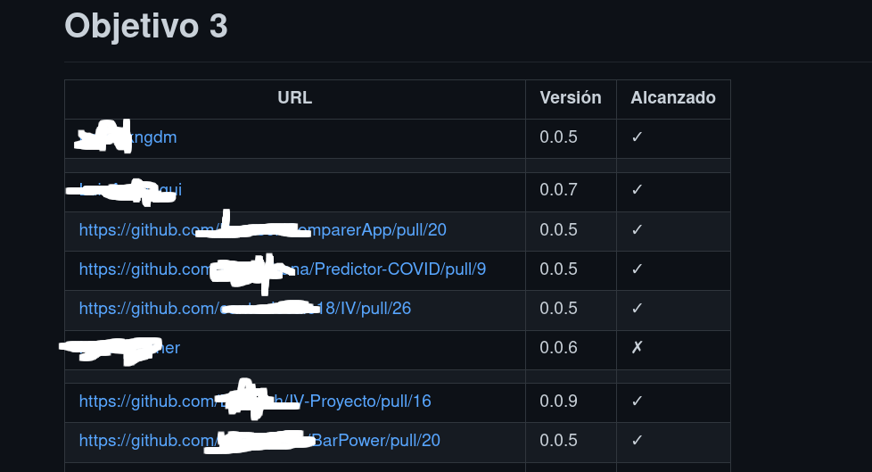
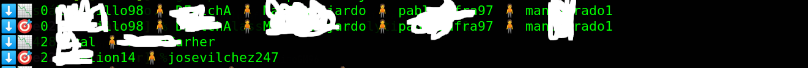

Class
Learning Analytics with Raku
JJ Merelo
Teaching cloud computing in 2021
Agile development
DevOps
Test-driven development
Learning is practicing
Project-based learning
Flipped class
Formative grading
Every one of those need some code
PBL ⇒ Tests
Flipped class, formative grading ⇒ control individual student
progress
Students submit via pull request
Tests (in Perl and JS)
Code reviews
I want my Raku!
OK, we're getting there
Students submit PRs to specific files
Objective met marked in the same row

Objectives can be
Not submitted
Not evaluated
Done
Unfulfilled
Need to know how students are
progressing in their objectives
Markdown ⇒ sets of students per objective
Meet IV::Stats
Digest objectives markdown files, obtain grades
and such
What are the grades
use IV::Stats;
say IV::Stats.new.notas.map( *.trans( "." => "," )).join("\n");
Has anyone dropped out?
use IV::Stats;
my $stats = IV::Stats.new;
for $stats.objetivos -> $o {
if ( $stats.bajas-totales($o) != set( Any ) ) {
say "⬇️ 📉 $o ", $stats.bajas-totales($o).keys.join(" 🧍 ");
say "⬇️ 🎯 $o ", $stats.bajas-objetivos($o).keys.join(" 🧍 ");
}
}
It's a set difference
method bajas-totales( UInt $objetivo) {
return @!objetivos[$objetivo] ⊖ @!entregas[$objetivo + 1];
}

How many objectives have been reached?
use IV::Stats;
use JSON::Fast;
say to-json IV::Stats.new.objetivos-cumplidos
Inside a GitHub action
- name: Genera JSON
run: raku -Ilib scripts/iv-objetivos.raku > data/objetivos.json
Conclusions
Easy data processing and handling in
Raku!
(Now) Easy integration in GitHub
workflows
Awesomeness in a few lines of code!